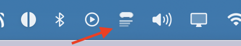

The black pill sits in your menu bar. Click the › chevron to expand and paste your script.
2
Paste your script & hit Go
Type or paste anything. Hit Save to store it. Your scripts persist between sessions.
3
Start speaking — it scrolls
Voice detection scrolls while you talk, pauses when you stop. Hover over the pill to pause manually.
4
Tweak from the menu bar icon
Click the icon in your menu bar to open settings — speed, sensitivity, mic, opacity and more.

👁
Show Prompter
Toggle to show or hide the teleprompter pill. Useful when you need to step away without quitting.
◐
Style — Notch / Classic
Notch pins the pill to your MacBook's notch area at the top. Classic makes it a floating draggable window you can place anywhere on screen.
◑
Opacity
Controls how transparent the teleprompter is. Lower it so you can see your subject through the overlay during video calls.
🎤
Voice Input
When ON, scrolling is driven by your voice — it scrolls while you speak and pauses when you stop. Turn OFF to switch to manual auto-scroll at a fixed pace.
🖥
Hide on Screen Share
When ON, the teleprompter is invisible to screen recording and screen share tools like Zoom, Meet and Loom. Only you can see it.
⦿
Microphone
Select which mic to use for voice detection. Switch between your built-in mic, AirPods, external USB mics or any other input device.
⏩
Scroll Speed
Sets how fast the script scrolls when voice is detected. Slide left for slower, right for faster. 1× is the default natural pace.
📶
Voice Sensitivity
Sets how loud you need to be before scrolling triggers. Slide right if it's not picking up your voice; slide left if background noise causes false triggers. The bar shows your live mic level.
⌨
Global shortcuts
These work from anywhere — even when OpenTeleprompter is not in focus.
Pause / ResumeStart or stop scrolling instantly mid-speech.
⌘⇧Space
Speed UpIncrease scroll speed one step.
⌘⇧↑
Slow DownDecrease scroll speed one step.
⌘⇧↓
Reset to TopJump back to the beginning of the script.
⌘⇧R
🖱
In-app controls
Hover over the pill to pause. Scroll wheel to manually move through the script. A+ / A− buttons adjust font size. ↺ resets to the top.